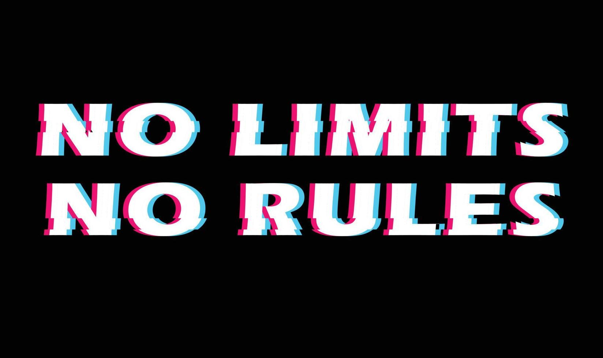

<div class="philosophy" id="philosophy" data-aos="zoom-in-up" data-aos-duration="1500">
  <div class="philosophy">
    <h2 class="title-philosophy"><small style="color: #4FE8D0; margin-right: 16px;">02.</small>My philosophy</h2>

    <p style="margin-top: 30px; font-size: 20px; color: #8892b0; line-height: 26px; font-family: serif;">
      &nbsp;&nbsp;&nbsp;I am a software developer who always aims to be pragmatic, I am generic in many subjects, but specialist in others
      that I believe are more important (balance). I strive to provide excellent experiences by planning, designing the software
      (sometimes using UML), developing it (creating the application code), deploying it, and bringing improvements and features over
      time. This is what is called "Agile". <br>
      &nbsp;&nbsp;&nbsp;Frankly, I would like to know why people spend mountains of money on books and lectures
      to learn the obvious, yes, I know this is unexpected to see on a presentation website, but I must say that I am not a developer
      who often listens to "<s>programming gurus</s>" talking about boring things like "how to do this or that" or "follow these rules",
      yes, I know that's being both rule-ignorant and arrogant, but not literally. I follow workflows and methods as long as they are not
      too restrictive, and I "follow the idea of Agile", but at the same time, I do not follow it because, to me, it is not a rule or
      something that increases productivity, but rather the obvious, i oppose rules and procedures that do not make sense because, to me,
      software is simple and it is an art, not something to argue about how to do it.<br>
       &nbsp;&nbsp;&nbsp;I am a very versatile person when it comes to
      programming, and I hate hearing the obvious. Want to see how simple it is? Look at my philosophy as a programmer: "Develop software
      responsibly, before implementing a feature, think about whether it will have a POSITIVE IMPACT on the product and if it will make
      the user's life easier or decrease the application's costs, analyze to see if it is not something that YOU WANT TO DO,
      the important thing is the product, code should be readable, bug-free, performant, secure, and stay up regardless of anything.
      Don't over-engineer unnecessarily and don't overdo it with design patterns." Of course, not literally, this is my philosophy for
      a product's code, for a code I create as a hobby, I literally over-engineer as much as I want, but this is my code, not a code
      for an important product.</p>

    <ul class="recently-tech">
      <p style="margin-top: 30px; font-size: 20px; color: #8892b0; line-height: 26px; font-family: serif;">
        Here are a few technologies I’ve been working with recently:</p>

      <div class="list-0">
        <li>PostgreSQL</li>
        <li>Angular</li>
        <li>Vue (nuxt)</li>
      </div>
      <div class="list-1">
        <li>Java (Spring)</li>
        <li>AWS</li>
        <li>Heroku</li>
      </div>
    </ul>

  </div>
</div>
